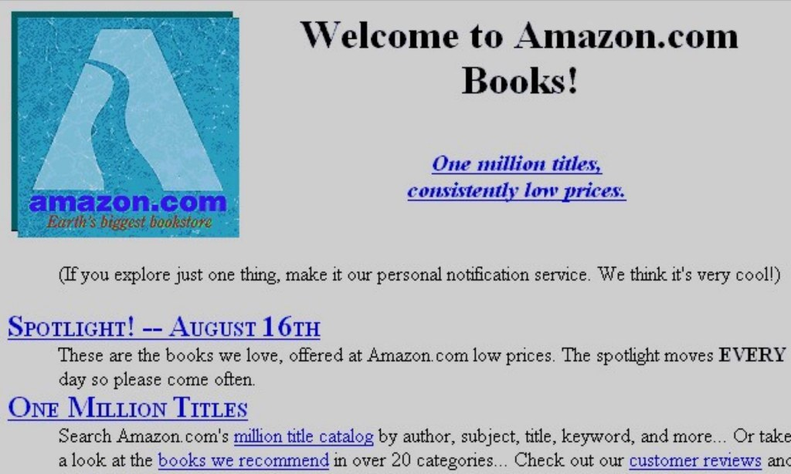
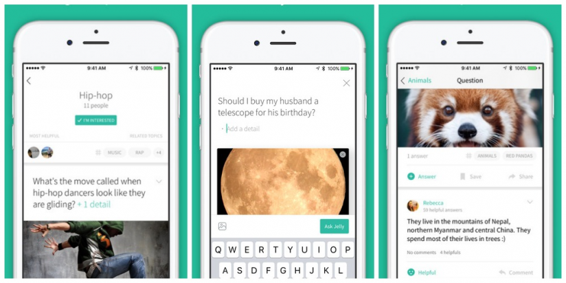

- 00 开篇词 打造千万用户的世界级产品.md
- 01 什么是优秀的产品经理？.md
- 02 硅谷的产品经理是什么样子的？.md
- 03 科技巨头和初创公司的产品经理有什么不同？.md
- 04 产品经理和项目经理有什么区别？.md
- 05 硅谷产品经理每天在做什么？.md
- 06 硅谷产品经理们都来自什么背景？.md
- 07 如何寻找用户需求？.md
- 08 目标客户和用户画像.md
- 09 手把手教你写用例： 优化微信加好友的功能.md
- 10 什么是最小化可行产品（MVP）？.md
- 11 案例：产品发布之前出了乱子，如何权衡取舍？.md
- 12 制定产品成功指标.md
- 13 如何撰写产品需求文档？.md
- 14 如何用数据做出产品决定？.md
- 15 如何组织有效的会议？.md
- 16 如何和工程师有效沟通？.md
- 17 如何与设计师有效沟通？.md
- 18 如何搞定A_B测试？.md
- 19 增长黑客的核心公式.md
- 20 想要增长，你的团队需要高效的工作流.md
- 22 硅谷高管的UIE（Understand, Identify, Execute）增长论.md
- 23 增长的核心在于减少用户阻力.md
- 24 产品增长的代价，如何权衡取舍？.md
- 25 三分靠策略 七分靠执行.md
- 26 为什么加班很久但是没成果？产品开发流程有问题.md
- 27 如何激励和管理比你资深的工程师、设计师？.md
- 28 产品经理的晋升秘密.md
- 29 你需要一个产品路线图.md
- 30 如何制定产品优先级 ？.md
- 31 好的产品经理和卓越的产品经理.md
- 32 产品经理面试考察的是什么？.md
- 33 如何提升产品感（product sense）？.md
- 34 如何提升产品经理的综合素质？.md
- 35 非计算机专业也能做产品经理？.md
- 36 模拟一场硅谷的产品经理面试.md
- 尾声 每个世界级的产品都有其使命.md
- 新书首发 《硅谷产品：36讲直通世界级产品经理》.md
10 什么是最小化可行产品（MVP）？
最小化可行产品，是现在硅谷产品开发最推崇的理念，其思想来源于“精益创业”（Lean Startup），由埃里克 · 莱斯（Eric Ries）在《精益创业：新创企业的成长思维》中提出。
精益创业代表了一种不断形成创新的新方法，它源于“精益生产”的理念，提倡企业进行“验证性学习”，先向市场推出极简的原型产品，然后在不断地试验和学习中，以最小的成本和有效的方式验证产品是否符合用户需求，灵活调整方向。如果产品不符合市场需求，最好能“快速地失败、廉价地失败”，而不要“昂贵地失败”；如果产品被用户认可也应该不断学习，挖掘用户需求，迭代优化产品。
最小化可行产品 = 凤凰男
现在，我喜欢把最小化可行产品描述成一个“凤凰男”，通过这个比喻你很容易理解这个概念。
当你刚和他相恋的时候，他只是对你好，除此之外真的一无所有，但是之后他奋发图强，赚了钱买了房子买了车，后来提升了时尚品味，开始健身了，开始品红酒了，带你去世界各地游玩，最终成为了一个“教科书”般迷人的老公。
但是其实你最需要的是对你好，如果他连最基本的对你好都达不到，那你肯定是不会跟他继续交往的。
所以，最小化可行产品， 就好比一个奋斗阶段的“凤凰男”，它至少要满足你的一个需求，并且可以比较好得满足，否则你没有任何理由去选择它。所以，“最小化”在这里的意思就是，没有任何一个功能是“加上去也挺好的”，但是少了任何一个功能都无法解决用户最基本的需求。
最小化= 降低试错成本，速度>完美
很多时侯，我们把一个产品做到完美再推向市场所花费的成本太高了，有可能付出了几年时间做出的产品却未能解决真正的用户需求，结果就是浪费了大量的时间和金钱。
那不如把事情简单化， 在一开始只做出一个能够解决用户需求的、最最基本的产品，然后再一步一步通过用户和产品的互动， 不断优化、不断创新，最终形成优秀的产品。
下面来看几个大型科技公司最小化可行产品的例子。

- 这是2004年的Facebook，当时只有填写用户的个人介绍、联系方式、政治观点、个人兴趣，显示用户的朋友、加入的小组和发消息功能。这个阶段的Facebook，还没有大名鼎鼎的朋友圈（News Feed），但是具备了为用户提供最基本的和朋友交流、看他朋友群的功能，满足了用户的窥探欲以及和他人交流的基本需求，所以大受欢迎。

- 这是1997年的谷歌， 只有简单的文本搜索功能，这时它的域名还在Stanford下面。你输入想要搜索的关键词，然后选择你希望显示多少条搜索结果，点击搜索后就可以看到最相关的特定数量的结果。 更有意思的是，它还有一个“I’m feeling lucky”的按钮，当你点击这个按钮的时候，它只会自动显示一条和你搜索的内容最相关的结果，这个有趣的按钮是当时谷歌的一大特色。 当年雅虎还是通过运营员工的人工筛选，把网站链接加到目录上，但效率低下。而谷歌的佩奇排名（PageRank）算法则实现了规模化和自动化，能够更好得满足用户需要快速、有效地获取信息的需求。因此，谷歌大获成功。

- 这是1994年的亚马逊，内容就是一个书单，你看中了哪本书就下单，然后亚马逊帮你找到这本书寄给你，这时它连自己的物流管理系统都没有。网页中显示亚马逊有100万本书，并且提供了一个目录，你可以查看书的作者、简介、书名、关键词等。虽然网站非常简陋，但是可以帮助你找到书店找不到的书，所以非常受欢迎。
这些产品共同的特点是，在初级阶段的功能非常简单，但都能以最好的方式满足用户一个未曾被满足的需求，所以用户就会持续使用，形成粘性。说到这里，我就要说说最小化可行产品的另一个要素“可行性”了。
可行性= 确保你的产品能够基本解决用户的需求
加快进入市场的速度，并不是说你的产品什么也没解决就可以进入市场。 你的最小化可行产品如果连最基本的唯一需求都解决不好， 这时你首先需要提升这个产品的体验， 看看能不能用更好的方式解决这个需求，而不是着急增加新的功能。
想一想，如果“凤凰男”在你说病了的时候，只是说“多喝热水”，而没有拿着玫瑰花和凉毛巾直奔你家，那他可能就要提升恋爱情商了，不然就算他的月薪从两千涨到三千也没什么价值。同样的道理，只有把最基本的需求解决好之后，最小化可行产品才有价值， 这之后才是你考虑新功能和新体验的好时机。
你可能会问，这个度应该怎么把握呢？我通过一个故事来讲讲这件事。
Instagram刚刚创立的时候，只有发图片的功能，用户体验并不好。有一次，CEO 凯文 · 斯特罗姆（Kevin Systrom）和女朋友介绍自己的这款APP，他女朋友看到图片后说了一句：能不能把这些照片弄得好看一点呢？他茅塞顿开，便和创业小伙伴们联合开发了几款滤镜，于是才有了后面的故事。
从这个角度来说，没有滤镜功能的Instagram不能算是最小化可行产品，因为用户的需求并不只是分享照片，而是要能够轻松分享拿得出手的照片。所以，虽然当时改进后的Instagram没有发消息、探索板块（Explore Tab）等功能，但是用户增长速度还是突飞猛进。
接下来，我跟你分享两个失败产品的例子，你可以体会一下“可行性”的重要性。

第一个是，Twitter联合创始人比兹 · 斯通（Biz Stone）创立的一款叫作Jelly 的APP，一开始发布的时候它有众多媒体站台、头版头条呼声很大。
Jelly 的定位是做朋友互动的搜索引擎，即你可以在APP上提问，你的朋友登录后就可以看到，回答你的问题。然后，你就会陆续收到来自于朋友们的回答，这些回答就是你搜索的结果了。比如，你可以问我晚上去哪吃饭，朋友看到了就会给你推荐餐馆。
但这个APP有两个主要的问题：
- 它只解决了提问者的需求，但对回答问题的人来说毫无意义，因此回答问题的人并没有养成使用这个APP的习惯，最终的结果是回答量逐渐减少；
- 等到朋友的回答需要时间，而你往往没有耐心和时间等待朋友给你的推荐。
第二个是，迪克 · 卡斯特罗（Dick Costolo）离开Twitter后做的一款叫作Chorus的APP，目的是帮助一群朋友互相监督定期健身、吃健康的食物。这个APP一开始有不少用户，但是一个月后就不是那么回事儿了。
主要原因是有人懒惰或者太忙没有健身，其他朋友会提醒你，但后来也就觉得没有意义了，而被提醒的人也因为感觉羞愧不再继续使用，所以这个APP在上线8个月之后就下架了。其实，这个产品并没有从根本上解决用户需求，它试图通过社交压力让大家坚持健身，但是过大的社交压力却适得其反。
上面这两个产品的失败，归根结底是它们忽视了“可行性”，并没有真正地解决用户最基本的需求，或者说没有以很好的方式解决这个需求。
总结
最小化可行产品， 就好比一个奋斗阶段的“凤凰男”，他至少要满足你的一个需求，并且可以满足得比较好，否则它的存在就没有实际意义。
第二点是，最小化可行产品要具备“最小化”和“可行化”两个要素。最小化的目的是降低试错成本，快速验证产品能否满足用户需求。而可行化是要确保你的产品可以很好地满足用户需求，而不是为了追求速度发布一个差强人意、只能解决50%需求的产品。
思考题
- 现在你需要设计一个APP，能够帮助学生家长和中学老师联系，方便他们了解孩子在学校的情况。这个APP需要解决的问题是，每学期只有一次家长会， 但是家长希望能够和老师们更频繁地交流孩子的情况，知道孩子的问题。请你思考一下，这个APP的最小化可行产品是什么，需要具备什么样的功能。
- 查阅一些资料，总结下王者荣耀、拼多多、Gucci、谢霆锋（他是怎么起步的，提供了什么，并满足了什么粉丝的需求，后来又是怎么发展的）的最小化可行产品是什么，以及这些产品是如何从最小化可行产品走到今天的。
© 2019 - 2023 Liangliang Lee. Powered by Vert.x and hexo-theme-book.